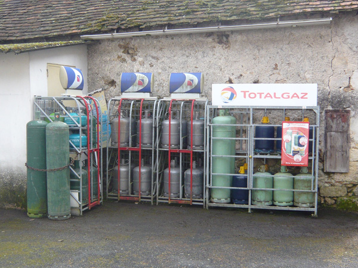
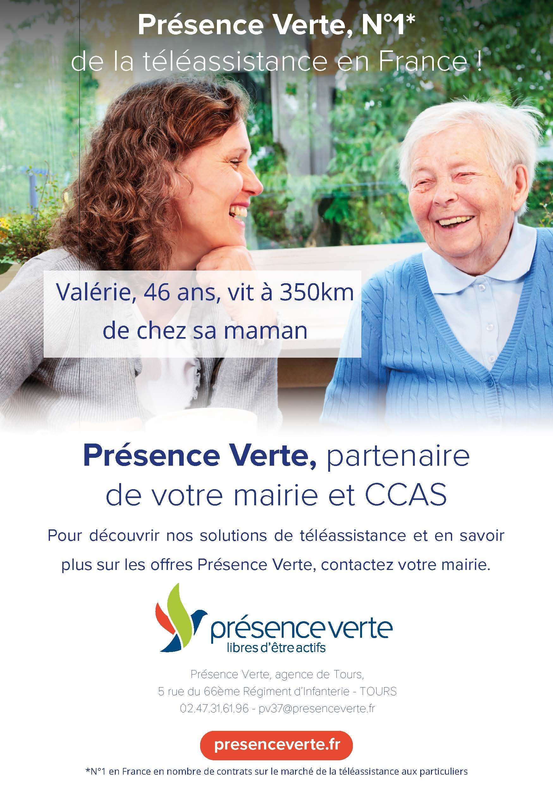
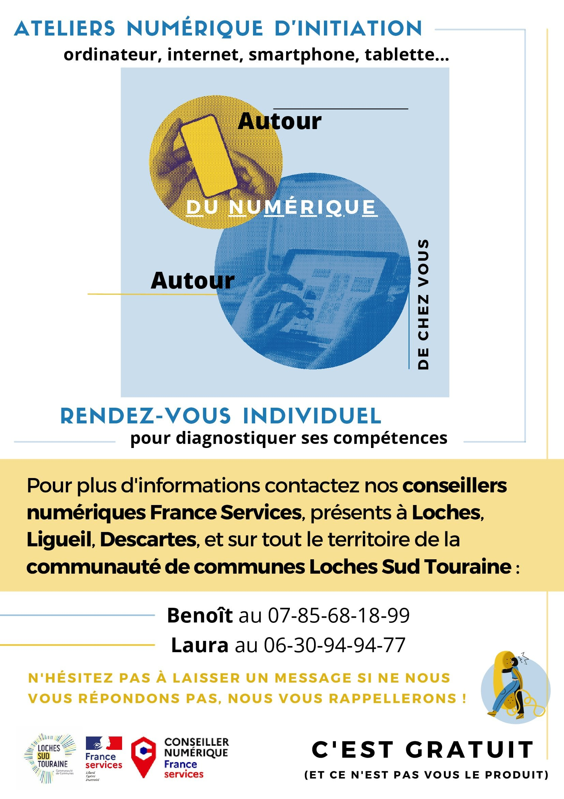
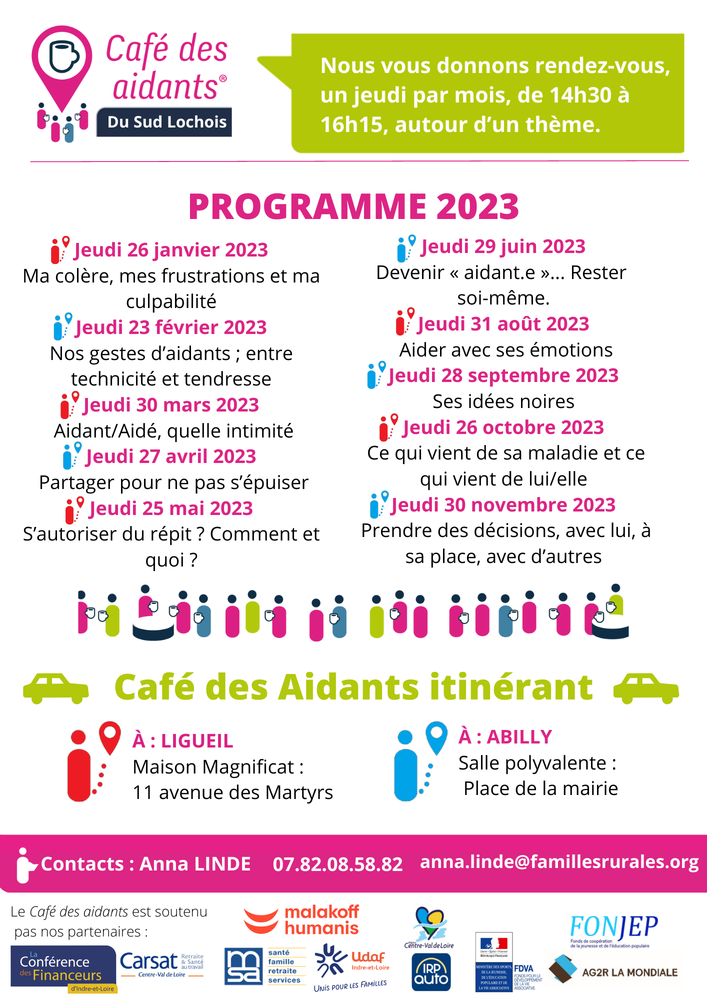

Le Comité des Fêtes organise un grand nombre de fêtes tout au long de l’année. A suivre dans l’onglet ACTUALITES.
A savoir : Le comité des fêtes loue également des tables et des bancs, ainsi que de la vaisselle. La table et les 2 bancs : 2 €
Contact
CHARPENTIER Nathalie, PRESIDENTE
Les Chaumettes – 37160 NEUILLY LE BRIGNON
02.47.92.30.04
Le Club de l’Amitié se réunit tous les vendredis après-midi à la salle des associations.
Contact
Madame Dominique CAGNIART.
Mairie
37160 Neuilly le Brignon
07 69 67 18 47
do.cagniart@gmail.com
Contact
GERVAIS Jacky
12, rue du Grainetier – 37160 NEUILLY LE BRIGNON
02.47.59.97.96
Cours tous les lundis à la salle polyvalente de NEUILLY LE BRIGNON : 19h00 : début des cours
Animatrice : Maryvonne PERROT
Présidente : Karine HARDOIN
Renseignements : 06.87.34.69.39

Téléphone : 02.47.92.59.01
Opérations bancaires
– retrait ou versement d’espèces sur compte courant postal dans la limite de 350 € par période de 7 jours,
– retrait ou versement d’espèces sur Postépargne ou livret d’épargne dans la limite de 300 € par
période de 7 jours,
– Paiement du mandat cash sans la limite de 300 € par opération
Pour tous mouvements sur un CCP – CNE, se munir d’une carte d’identité valide, c’est-à-dire de moins de 10 ans.
Services Postaux
– Tout affranchissement manuel (lettres et colis ordinaires)
– vente de timbres-poste à usage courant
– vente d’enveloppes Prêt-à-Poster…
Point lecture
Un investissement a été fait pour l’achat de nouveaux livres et magazines large vision. N’hésitez pas à venir les consulter ou les emrpunter.
Téléphonie
Depuis juillet 2009, l’agence communale propose la vente de recharges téléphoniques ( SFR, Orange, Bouygues et autres…)
Gaz
PRIMAGAZ – BUTAGAZ – ACTIGAZ

LISTE COMMERCANTS ET ARTISANS NEUILLY LE BRIGNON
Commerçants
– FROMAGERIE MAURICE – Bourdel : 02.47.92.30.48
– MA PTITE EPICERIE ET VOUS : 5 rue du Grainetier – EPICERIE AMBULANTE – Magasin ouvert le samedi matin de 9h00 à 12h00 : 06.71.16.58.24
Artisans
- – Pierre GAILLARD : Création et restauration de girouettes – Les Ardonnières : 06.86.81.63.74
- – Alexandra DEMOUCHE : création de bijoux préhisto-chics – ARKEFACT : 06.76.35.83.78
- – La Métallerie Tourangelle : 1 rue du Maréchal Ferrant : 02 36 33 91 77 / 07 60 08 63 86
- – La Savonnerie Tourangelle : 1 rue du Maréchal Ferrant -07.86.09.09.98 – site internet : www.savonnerie-tourangelle.fr
- – Jean-Fraçois DELAMOTTE : expert forestier : LARCY : 06 07 66 63 44
La commune de NEUILLY LE BRIGNON a passé une convention avec l’association de téléassistance PRESENCE VERTE :
Lien vers site internet : ICI
Pour tous renseignements vous pouvez vous adresser à la mairie de Neuilly le Brignon

Le Guide pour 2020 dédié aux démarches ANTS va vous permettre d’être mieux accompagné dans les démarches quotidiennes pour réaliser une demande de carte grise, de permis de conduire, de passeport ou de Carte Nationale d’Identité.
Site du Ministère de l’Intérieur : https://ants.gouv.fr/
- Réglementation sur les excès de vitesse en France (amendes, retraits de points, suspension de permis) : https://www.legipermis.com/infractions/exces-de-vitesse.html
- Réglementation des stages de récupération de points : https://www.legipermis.com/stage-recuperation-points/
- Site du permis de conduire de l’Etat (renouvellement, déclaration de perte, suivi de dossier) : https://permisdeconduire.ants.gouv.fr/
MAISON FRANCE SERVICE
MAISON FRANCE SERVICES : Descartes – Le Grand Pressigny – Preuilly-sur-Claise – Ligueil – Loches : CLIQUEZ ICI
ATELIERS NUMERIQUES :
INITITATION ATELIERS NUMERIQUES

Café des aidans programme 2023
Le CIAS : L’acteur intercommunal de l’action sociale sur le territoire Loches Sud Touraine
Croix-Rouge Mobilités Indre-et-Loire


La Communauté de Communes a une compétence action sociale sur l’ensemble de son territoire. Elle a confié l’exercice de cette compétence au Centre Intercommunal d’Action Sociale (CIAS).
Le CIAS est un Etablissement Public Administratif qui a son propre conseil d’administration composé de manière paritaire d’élus communautaires et de représentants de la sphère associative. Le CIAS gère un budget autonome. Loches Sud Touraine lui verse chaque année une subvention de fonctionnement. Le siège du CIAS est situé au Pôle Social Simone Veil à Loches.
Pôle social Simone Veil
CIAS
24 bis avenue du Général De Gaulle
37 600 Loches
Permanences téléphoniques tous les matins de 9h à 12h30 sauf mardi et samedi : 02 47 59 23 30
Accueil uniquement sur RDV du lundi au vendredi
www.lochessudtouraine.com (onglet action sociale / consultation du guide pratique du territoire)
Le CIAS joue un rôle d’observateur social en lien avec tous les partenaires sociaux du Sud Touraine, pour recenser les besoins et faire émerger des projets collectifs, dans le cadre de sa démarche d’analyse des besoins sociaux (ABS). Il participe aux instances des dispositifs d’insertion locaux, départementaux et régionaux.
Il assure les compétences suivantes, en s’appuyant sur le réseau de partenaires, des institutions et des communes, afin d’avoir une action de proximité sur l’ensemble du territoire :
Missions :
- Accueil information orientation et accès aux droits
- Aides alimentaires (mensuelle et d’urgence)
- Aides financières (secours financiers, secours mobilité d’urgence, prêts à taux 0%)
- Domiciliations (adresse administrative pour les personnes sans domicile stable)
- Aide sociale légale et obligations alimentaires par délégation du Conseil Départemental
- Accompagnement social des publics en situation de précarité : accompagnement de 80 bénéficiaires du RSA par délégation du Conseil Départemental 37, actions collectives (ateliers cuisine, jardin partagé…)
- Gestion de résidences sociales avec agrément de Foyer des jeunes travailleurs (18 studios meublés)
OU Missions Détaillées :
L’accueil, information, orientation et l’accès aux droits
A ce titre, le CIAS actualise le guide pratique du Territoire Loches Sud Touraine recensant les coordonnées de tous les acteurs (institutions, associations) et permanences (juridiques, de santé, de prévention,) présentes sur notre territoire (téléchargeable sur le site www.lochessudtouraine.com (onglet action sociale / consultation du guide pratique du territoire)
Une plaquette du pole social Simone Veil est en cours de réalisation.
La domiciliation
Les personnes sans domicile fixe peuvent obtenir une adresse administrative au CIAS pour prétendre au maintien ou à l’ouverture de leurs droits. En Sud Touraine, 370 adultes ont ainsi une adresse de domiciliation.
Pour proposer un service de proximité, le CIAS a conventionné avec la commune de Saint Hippolyte et le réseau des France Services (Ligueil, Descartes, Preuilly sur Claise) pour domicilier par délégation du CIAS.
L’aide sociale légale
Par délégation du Conseil Départemental, le CIAS instruit les demandes d’obligation alimentaire et d’aide sociale légale. Ces aides financières peuvent être sollicitées pour la prise en charge des dépenses d’aide à domicile ou des dépenses d’hébergement pour personnes âgées ou en situation de handicap. Pour une meilleure proximité, le CIAS a un partenariat avec les communes de Descartes et Ligueil, pouvant réaliser l’instruction de ces dossiers par délégation du CIAS.
Secours financiers, prêts et bons mobilité
Le CIAS examine des demandes de secours financiers et de prêt instruites par tout travailleur social (principalement par les assistantes sociales de secteur de la Maison Départementale de la Solidarité, MDS), en se basant sur sa grille intercommunale de secours. Les demandes sont transmises à la commune de résidence du demandeur pour avis avant examen en commission de secours CIAS.
Les bons mobilité instruits par un travailleur social, sont directement transmis au CIAS (sans passage en commission) pour délivrance d’un bon en urgence auprès d’un distributeur de carburant le plus proche ou d’un billet SNCF.
L’aide alimentaire
Le CIAS instruit les demandes d’aide alimentaire mensuelle pour les bénéficiaires retirant un colis dans les locaux du CIAS à Loches. Il assure la distribution alimentaire mensuelle aux personnes bénéficiaires et distribue également les colis d’urgence. Au total, 730 personnes bénéficient chaque année de l’aide alimentaire du CIAS. Le CIAS apporte aussi chaque année un soutien à la Banque Alimentaire sur ses actions de collecte alimentaire nationale (juin et novembre) sur le Lochois.
Pour assurer une couverture territoriale, le CIAS a un partenariat avec la Croix Rouge Haute Touraine (Ligueil, Descartes, Preuilly sur Claise, Grand Pressigny) et les Restos du Cœur (Loches, Descartes, Preuilly sur Claise), pour assurer l’aide alimentaire (périodique ou d’urgence) au bénéfice de tous les habitants du territoire.
Accompagnement social des personnes en situation de précarité
Le CIAS assure l’accompagnement socioprofessionnel de 80 bénéficiaires du RSA en file active par mois par délégation du Conseil Départemental, qui désigne les personnes à accompagner. Les deux travailleuses sociales du CIAS réalise un accompagnement global, individuel et collectif auprès des personnes dans leurs démarches d’insertion sociale et professionnelle : budget, santé, logement, maitrise de l’énergie…
- Le CIAS assure l’accompagnement socioprofessionnel de 9 jeunes âgés de 16 à 25 ans en file active par mois par délégation du Conseil Départemental, qui désigne les personnes à accompagner dans le dispositif Autonomise-Toit.
- En parallèle, des ateliers collectifs mensuels autour de la cuisine et du jardinage sont organisés pour lutter contre l’isolement et travailler sur l’équilibre alimentaire.
Logement Jeune : Gestion de Résidences Sociales agrées Foyer de Jeunes Travailleurs (FJT)
Le CIAS gère deux résidences sociales agrées Foyer Jeunes Travailleurs, soit 18 logements pour des jeunes en insertion professionnelle de 16 à 30 ans.
Le soutien financier
Le CIAS apporte un soutien financier et technique aux associations caritatives et d’insertion du territoire.